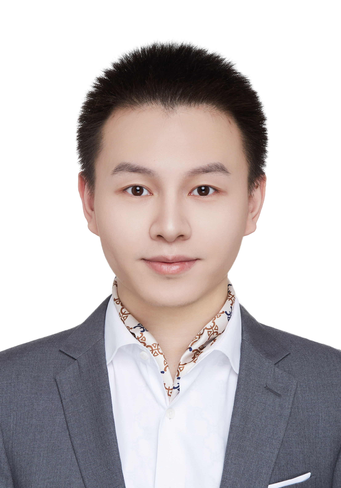
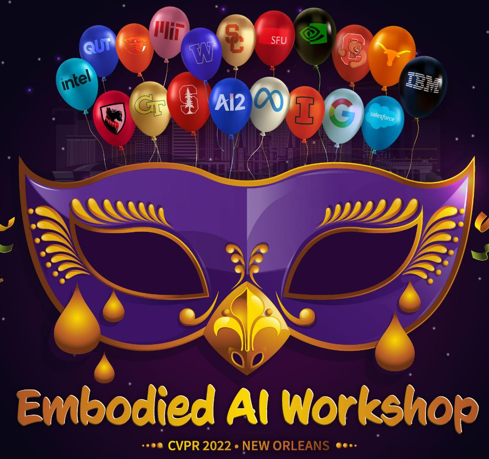
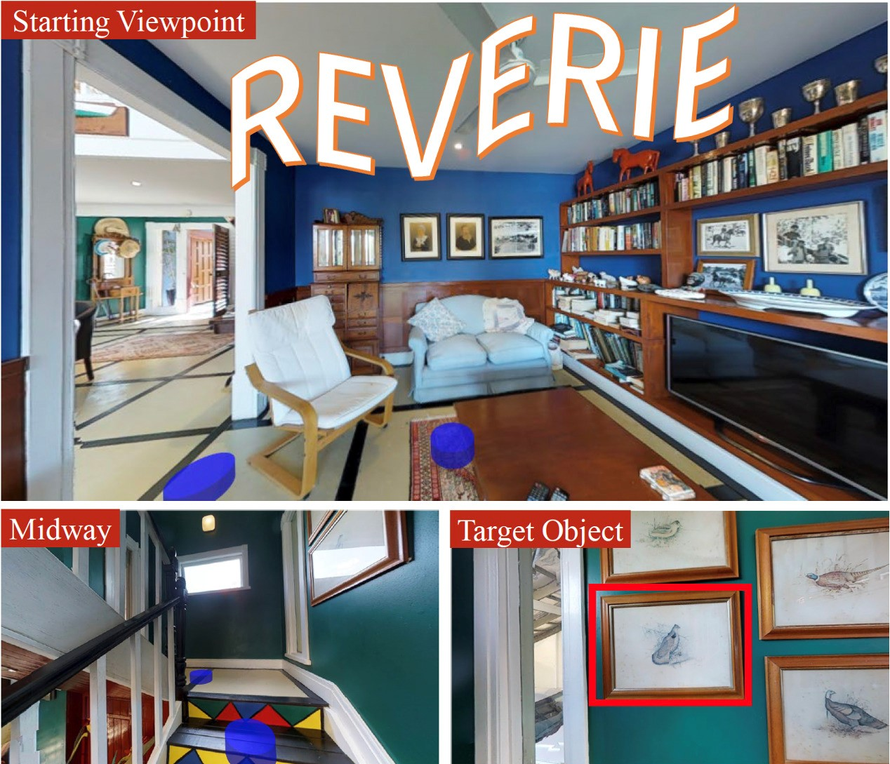

Dong (Carlo) An Center for Research on Intelligent Perception and Computing (CRIPAC) National Laboratory of Pattern Recognition (NLPR) Institute of Automation, Chinese Academic of Sciences (CASIA) Email: andong2019 AT ia.ac.cn
|
 |
News
- 10 / 2022: One paper is accepted by BMVC 2022!
- 08 / 2022: We won 2nd place in CSIG 2022 REVERIE Challenge!
- 07 / 2022: We won 2nd place in IJCAI-ECAI 2022 Noisy Labels Challenge! Congratulations to WeiChen!
- 06 / 2022: We won 1st place in CVPR 2022 Embodied AI Workshop: RxR-Habitat Competition!
- 09 / 2021: One paper is accepted by NeurIPS 2021!
- 08 / 2021: I was selected into the first PhD experimental class of CASIA!
- 07 / 2021: One paper is accepted by ACM MM2021!
Biography
Dong received the BSc degree from Peking University (PKU) in 2019. He is a PhD candidate of Institute of Automation, Chinese Academy of Sciences (CASIA), supervised by Prof. Tieniu Tan, Prof. Liang Wang and Prof. Yan Huang. He interned at SenseTime and Huawei 2012 Lab.
His research interests include computer vision and pattern recognition, with a focus on Embodied-AI and Multimodal Leaning.
Publications
-
1st Place Solutions for RxR-Habitat Vision-and-Language Navigation Competition (CVPR 2022)
Dong An*, Zun Wang*, Yangguang Li, Yi Wang, Yicong Hong, Yan Huang, Liang Wang, Jing Shao
Technical Report, 2022. PDF
-
Neighbor-view Enhanced Model for Vision and Language Navigation
Dong An, Yuankai Qi, Yan Huang, Qi Wu, Liang Wang, Tieniu Tan
ACM International Conference on Multimedia (ACM MM), 2021. (Oral, 9.2% acceptance rate) PDF
-
Neighbor Regularized Bayesian Optimization for Hyperparameter Optimization
Lei Cui, Yangguang Li, Xin Lu, Dong An, Fenggang Liu
British Machine Vision Conference (BMVC), 2022. PDF
-
Landmark-RxR: Solving Vision-and-Language Navigation with Fine-Grained Alignment Supervision
Keji He, Yan Huang, Qi Wu, Jianhua Yang, Dong An, Shuanglin Sima, Liang Wang
Advances in Neural Information Processing Systems (NeurIPS), 2021. PDF
Competitions
|  |
RxR-Habitat Vision-and-Language Navigation Challenge @ CVPR 2022 . Our team Joyboy (Dong An*, Zun Wang*, Yangguang Li, Yi Wang, Yicong Hong, Yan Huang, Liang Wang, Jing Shao) is the winner. See details here: Results of RxR-Habitat 2022. |
|  |
REVERIE Challenge @ CSIG 2022. Our team TouchFish (Dong An, Yifei Su, Shuanglin Sima, Hongyuan Yu, Weichen Yu, Yan Huang) is the runner-up of both channels. See details here: Results of REVERIE Challenge 2022. |
 |
Learning and Mining with Noisy Labels Challenge @ IJCAI-ECAI 2022. Our team (Weichen Yu, Hongyuan Yu, Yan Huang, Dong An, Keji He, Zhipeng Zhang, Xiuchuan Li, Liang Wang) is the runner-up of task 1-1 and 2nd runner-up of task 1-2. See details here: Results. |
Professional Activities
Winner invited talk at Embodied-AI Workshop @ CVPR 2022
Reviewer, ACM MM
Honors and Awards
2022, Winner of RxR-Habitat Challenge, CVPR 2022 [RxR-Habitat Certificate]
2022, Runner-up of REVERIE Challenge, CSIG 2022 [REVERIE Certificate_1] [REVERIE Certificate_2]
2022, Runner-up of Learning and Mining with Noisy Labels Challenge, IJCAI-ECAI 2022 [Noisy-Labels Certificate]
2021, Outstanding Student of CAS
| © Dong An | Last update: Oct 2022 |